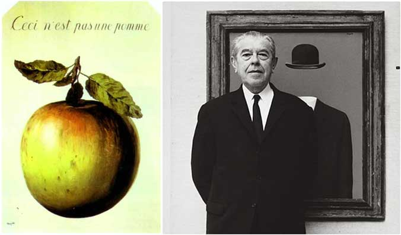
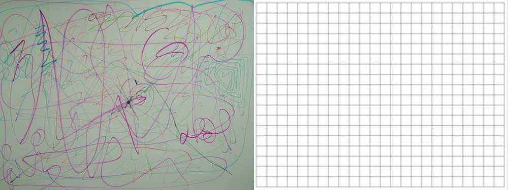
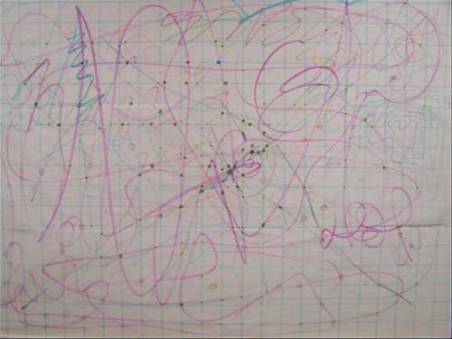
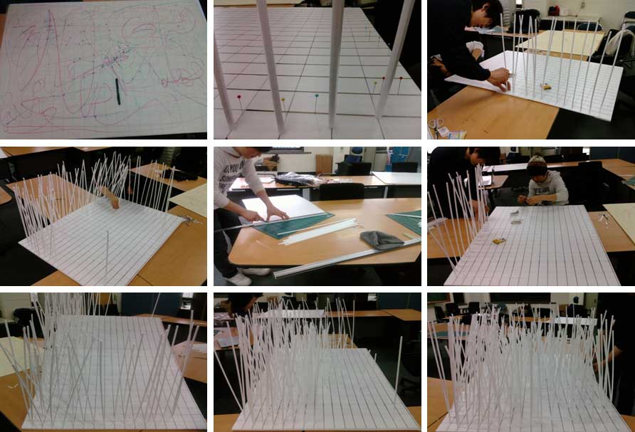
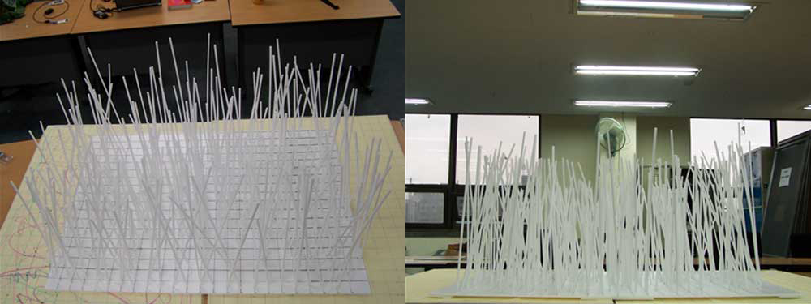
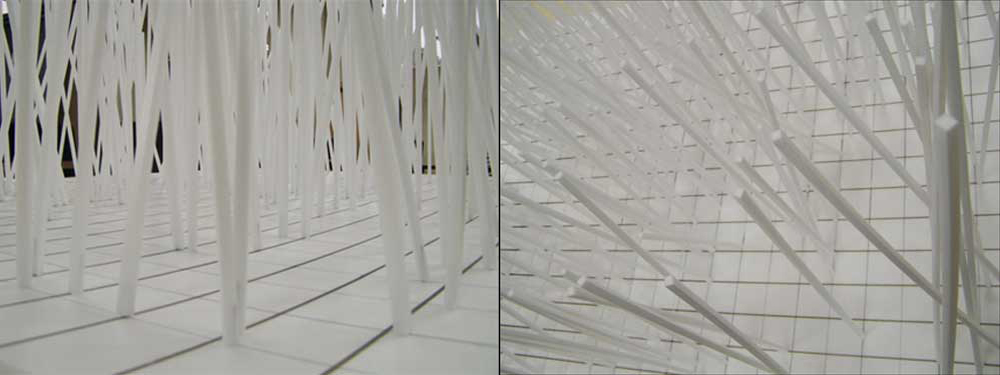
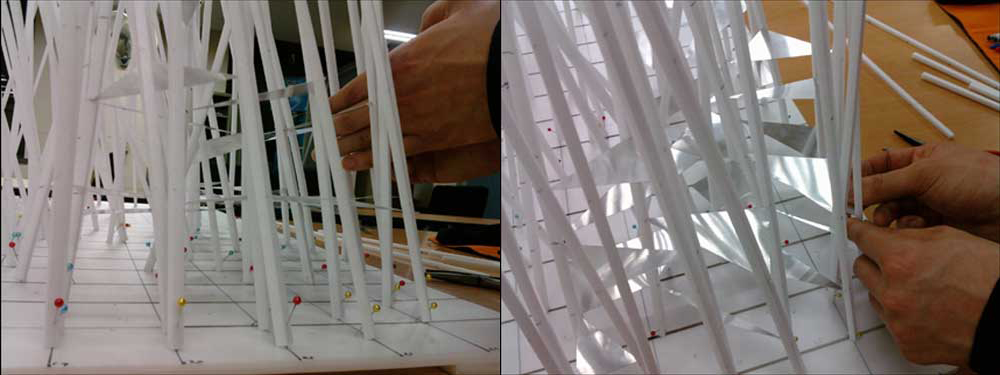
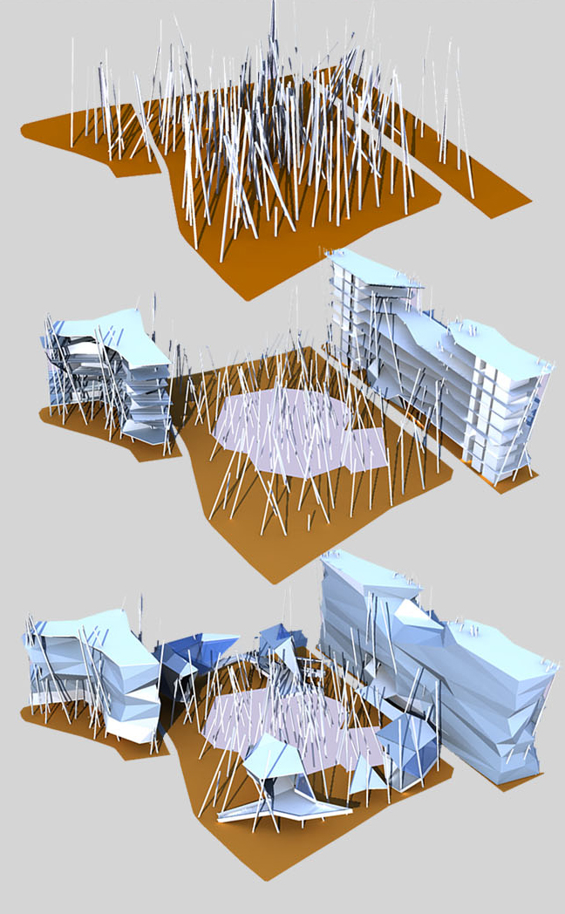
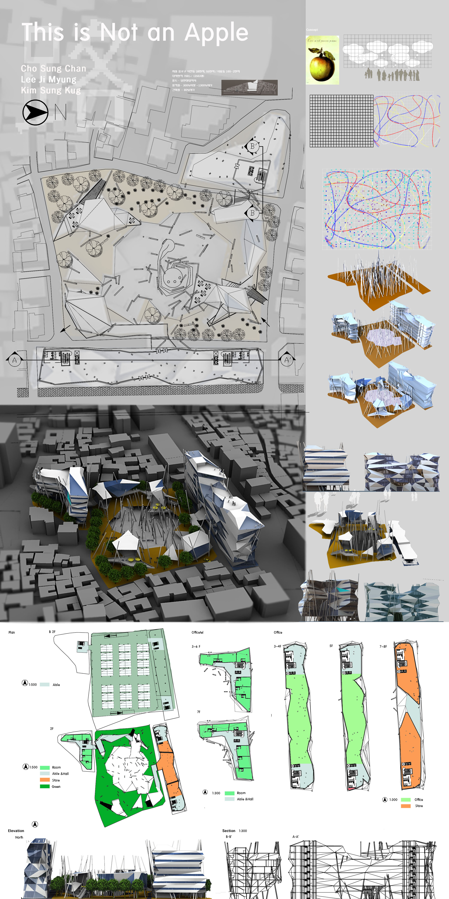
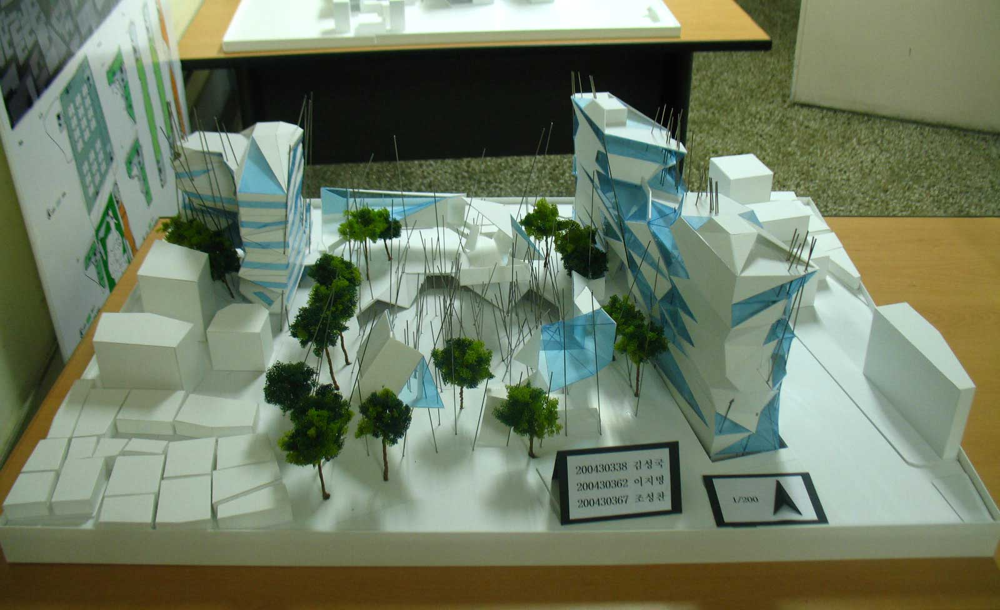

2017.09.07
모순된 공간 디자인

- This is not an apple / 르네 마그리트 -
졸업작품의 주제는 르네 마그리트 작품에서 콘셉트를 도출하여 디자인하는 것이었다. 초현실주의 작가인 르네 마그리트의 작품은 일반인으로서는 이해하기 힘든 것들이 많았다.
그중에 내 눈을 사로잡은 작품이 This is not an apple이다. 우리가 흔희 알고 있는 사과를 그려놓고 이것은 사과가 아니라는 제목을 붙여 놓은 작품이 내게는 신선했다.
그 후 디자인 콘셉트를 모순이라는 주제로 잡고 콘셉트 모델링을 하기로 마음먹었다.
" 모순된 공간은 어떤 공간일까? "

- 50명의 학우가 그린_불규칙한 선 / 5X5 격자_규칙적인 선 -
공간을 모순적으로 만들기란 솔직히 불가능에 가깝다. 그래서 공간이 만들어지는 과정에 의미를 담기로 결심했다. 사람의 무의식에서 나오는 예측 불가능한 생각들을 활용하여 모순적인
공간이라는 의미를 담아보려 했다.
그래서 폼보드 판과 펜을 들고 교내를 돌아다녔다. 교내에서 마주치는 학우들에게 펜으로 선을 그려달라고 부탁했다. 그림이어도 상관없고 싸인이나 글씨라도 상관없다. 단 펜이 보드에서
떨어지면 더 이상 선을 이을 수 없다는 룰을 정해주었다.
생각보다 참여율은 좋았다. 사인을 하는 사람이 있는가 하면 알 수 없는 선을 그리는 학우들도 있었다. 그렇게 50명이 그린 불규칙한 선 위에 규칙적인 5cm 격자무늬를 올려보았다.

- 불규칙한 선과 규칙적인 선의 교차점 좌표 -
" 좌표를 통해서 어떻게 공간을 만들 수 있을까? "
이제 내가 디자인 룰을 정하는 시간이 왔다. 공간을 만들려면 우선 기둥이 필요했다. 그래서 기둥을 세우기로 했다.
기둥은 교차점을 이용하였다. 불규칙한 선들과 그리드의 선이 교차하는 지점에 기둥을 세우기로 했다. 기둥의 높이는 인간이 가장 아름답게 보이는 8등신 비율을 생각했다. 그래서 8의
배수로 기둥의 높이를 산정하기로 했다.

- 좌표에 기둥을 세우는 과정 -
1 + 1 = 56cm
1 + 2 = 48cm
1 + 3 = 40cm
1 + 3 = 40cm
1 + 4 = 32cm
1 + 5 = 24cm
그리드 + 불규칙한선 = 기둥 높이


- 좌표에 기둥을 세운 모습 -
가는 기둥들을 일자로 세워보니 마치 죽음의 덧과 같은 느낌이었다. 아파 보였다. 그래서 기둥들을 기울이기로 결심했다. 1번 접점은 2번 접점의 방향으로 5˚씩 기울였다.
그리고 2번 접점은 3번 접점으로 기울였다. 기울이고 보니 동적인 느낌을 받을 수 있었다. 학우들에게 받았던 불규칙한 선들 때문인지 기둥의 기울기도 일정하지 않았다.
규칙을 새로 만들어 적용했지만 항상 예상하지 못하는 결과를 얻을 수 있어서 재미있었다.
" 공간을 어떻게 만들까? "

- 기둥에 슬라브를 설치한 모습 -
기둥과 기둥의 사이 공간에 알루미늄판을 연결하여 층을 만들어 보았다. 모호한 느낌의 공간이 만들어졌다.
삭제버튼 이제는 콘셉트 모델링을 대지에 옮기는 작업을 해야 한다. 우리가 선정 받은 대지는 돈화문로 인근에 있는 현대 뜨레 비앙 오피스텔과 상가 건물이 있던 자리이다.
검사버튼 삭제버튼 옛 건물들이 답답하게 붙어 있는 주변이 싫어서 공원을 기획했다. 실제로 주변에 고궁들이 많았지만 주민들이 이용할 만한 휴게공간이 없다는 게 아쉬워 기획하게
되었다.
고궁 주변이라 높이 제한이 있었기 때문에 건물을 높게 올릴 수 없었다.
" 컨셉 모델링을 건축화 시켜라 "

- 컨셉 모델링을 대지에 적용 -
콘셉트 모델링을 프로그램화 시켰다. CAD로 좌표를 만들고 3D 모델링을 통해 콘셉트 모델링을 만들었다. 많은 밤을 새운 작업이었다.
검사버튼 삭제버튼 콘셉트 모델링을 우리가 선정한 대지에 적용시켰다. 공원엔 주민 편의시설을 위한 공간이 만들어졌고 길가에는 상가 건물을 공원 옆으로는 오피스텔을 만들었다.
삭제버튼 기둥들이 건물을 관통하는 디자인이기에 코어 설계가 쉽지 않았다. 기둥들이 위치한 지점에 슬라브를 놓고 대지에 벗어나지 않게 잘라냈다.
그리고 그 슬라브의 형태를 따서 외벽을 완성하였다. 단순한 규칙만을 가지고 디자인하다 보니 만들고 작업하는 나 또한 예상하지 못하는 결과물을 항상 접하게 되어 즐거웠다.
" 졸업설계 "


- 최종 설명 판넬과 건축모형 -
모순이라는 주제를 가지고 실험적인 디자인 작업을 할 수 있어서 너무 즐거웠다. 졸업설계를 마치고 정말 힘들었지만 그만큼 가치 있는 시간이었다.
졸업작품이 전시되었을 때 많은 논란의 중심에서 이야기할 수 있어서 더 재미있었다.
논란을 불러일으켰다는 사실 자체가 르네 마그리트의 작품을 바라보는 사람들의 시선과 비슷하게 느껴졌기 때문이다. 의도하진 않았지만.. ^^